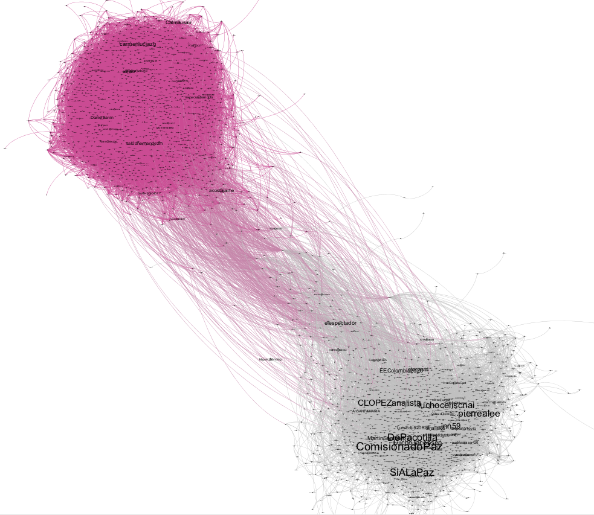

To keep track of the spread of Coronavirus on campus, my employer has asked every faculty person to provide a daily report of health-status via email. Yes, this means sending an email every day saying “I’m still healthy!” to a designated faculty member in the department, who must then verify everyone has responded that day and hunt down those who haven’t.1 Having to send these daily emails made me go back and re-learn something I had tackled long-ago but forgotten: how to set up my computer to automatically run an R script at a scheduled date/time.
I originally did this in graduate school to scrape millions of tweets at given time intervals in the run-up to the October 2016 Colombian “peace” referendum. The result was a lot of data and this cute graph that I haven’t been able to publish anywhere.2

So, here’s the set-up for the recurring email problem using R and crontab, but you can easily adapt the solution to other needs.
Sending emails with R is made easy by the gmailr package.